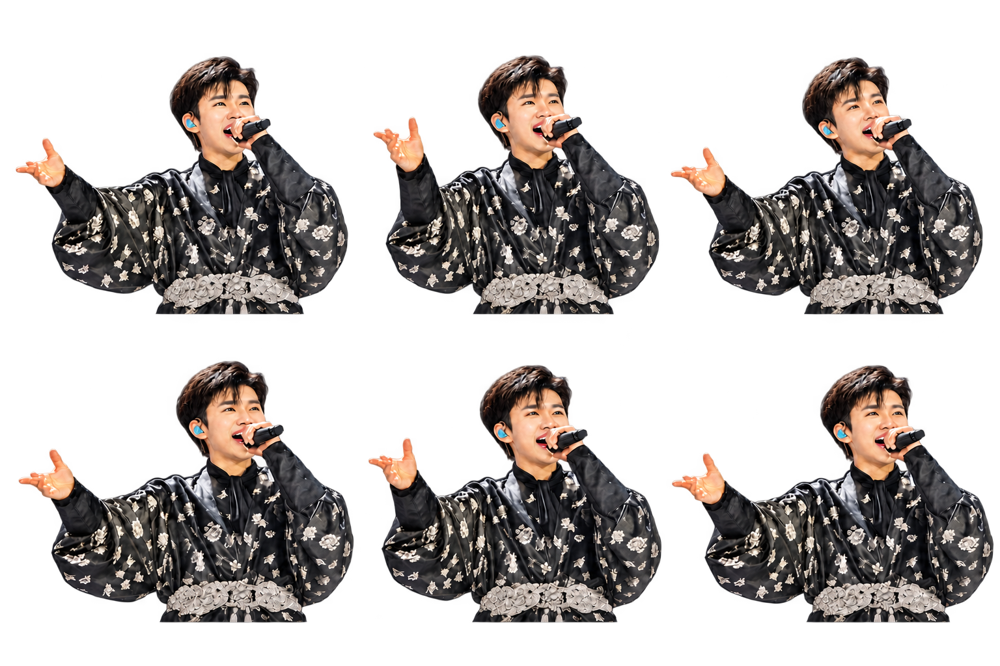

SPRITE CINEMA / MOTION STUDY 01
사진 이야기 작업실 ↗한 장의 사진, 움직이는 무대
분리한 인물 6프레임에 빛·물결·카메라 움직임을 더한 10초 시험 장면입니다.
실제 공연 영상이 아닌 AI 창작 애니메이션이며, 노래나 입 모양 동기화는 포함하지 않습니다.
무대와 인물을 불러오고 있습니다…
완성 영상 다시 저장인물 시트와 배경 원본 보기
인물은 왼쪽부터 위→아래 순서의 3×2 배열입니다. 원본 사진에서 보이지 않은 부분과 중간 자세는 AI가 재구성했습니다.
투명 인물 시트 저장 · 배경 저장